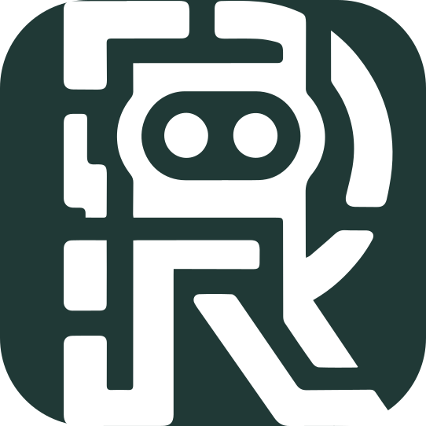

Add an action
Open Actions in RoboClip and select Add action.

RoboClipRoboClip actions
An action turns the text on your clipboard into a repeatable workflow. Start with a simple prompt or choose a local tool, then run it from the popup whenever you need it.
Open Actions in RoboClip and select Add action.
Use an AI action for a reusable prompt, or a local tool for an on-device transformation.
Give it a clear name. It appears in the popup and can also have its own shortcut.
Both start with your clipboard, but they process it differently.
AI action
Use {{input}} where the clipboard text belongs. Leave the provider unchanged to use your active provider, or choose an override for this action only.
Local tool
Decode JWTs, transform Base64 or Base64URL, and encode or decode URL components without using an AI provider.
This example asks for one choice when it runs and then inserts the clipboard text:
Rewrite this in a {{tone}} tone.
Keep the meaning and return only the rewritten text.
{{input}}Add a few choices such as Friendly, Professional, and Direct. RoboClip shows them as numbered options and also offers Other… when you need something different.
In development
Follow-up templates are being developed for a future RoboClip release. They are not yet available in the published downloads.
In the development version, set an AI text action's Show this action field to Below results or At start and below results. It appears as a direct button below the result, with no extra menu. For example, create a Shorter action:
Make this text shorter while preserving its meaning:
{{result}}{{result}} uses the latest result, including your own edits. {{input}} uses the original clipboard text. When an action runs at start, both use the clipboard. Other template variables still offer their numbered choices.
The result updates in place. Copy remains available while it runs, and Undo last action restores the previous text and formatting. Cancelling or a failed request leaves the previous result available. Undo does not delete saved history entries. Result-only actions do not use global shortcuts; local tools and GIF actions continue to run at start.
Ready to try it? Open RoboClip, go to Actions, and start with one task you repeat every day.
Back to RoboClip